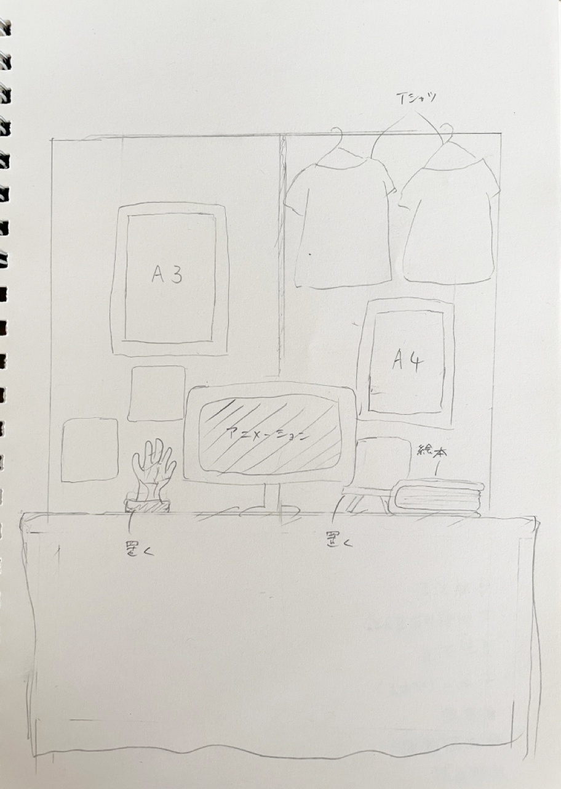
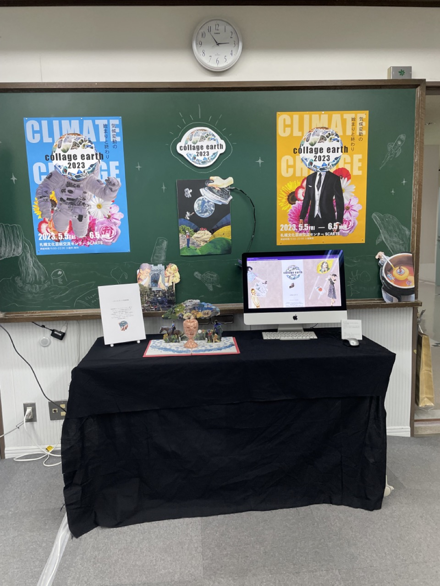
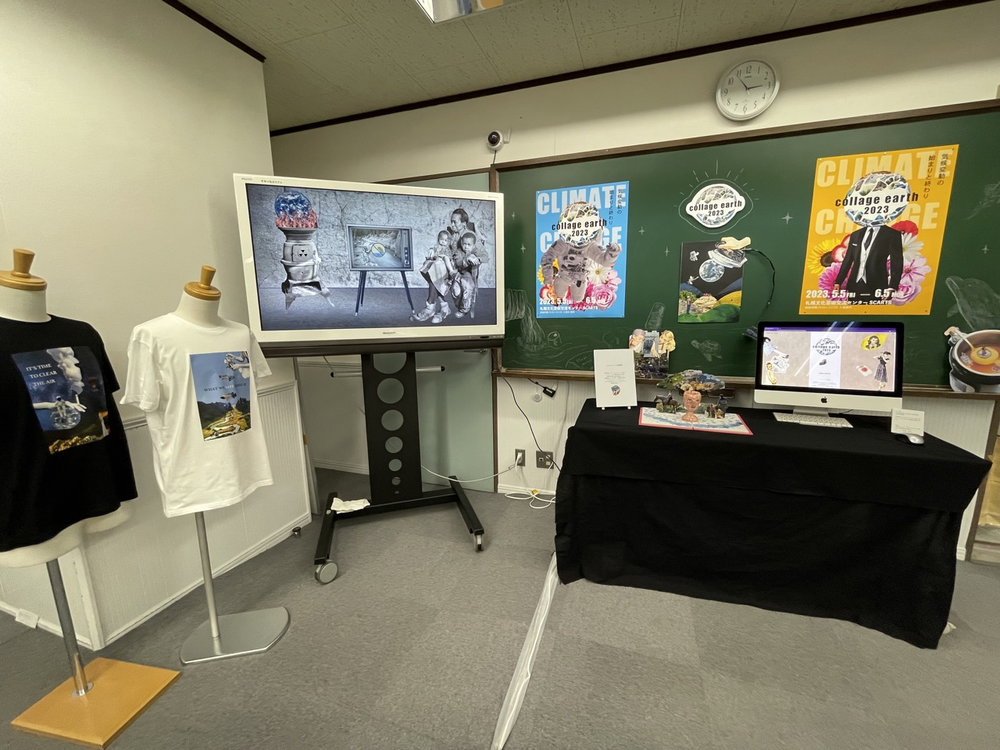

design/animation/graphic/art
卒業制作「collage earth 2023」
気候変動とコラージュアートをテーマにした展示会を卒業制作で表現しました。
制作期間
4ヶ月
企画内容
コラージュアートで伝える気候変動の恐ろしさ
卒業制作は２年間の集大成の作品になるため今まで学んできたことと、
自分の好きなことをしようと思いました。
近年SDGsがあたりまえになりつつある中で、私は気候変動に着目しました。
作品のコンセプトは「コラージュアートの不思議な世界の中に潜む気候変動の脅威と現実」です。
世界の平均気温は年々上昇しており、それによって自然破壊や多種多様な生物の絶滅スピードが加速しています。
この危機的状況を架空のプロジェクト「collage earth 2023」で私が好きなコラージュアートで表現し、少しでも見た人の意識が変わればいいなと思っています。
<制作物>
・アニメーション
・ロゴ
・ポスター
・飛び出す絵本
・Tシャツ
・オブジェ
・WEBサイト
・概要説明用ボード
<展示イメージ>

 
まとめ
卒業制作を通して、気候変動についての理解が深まり、とても良い経験となりました。 自分だけではなく見ている方にも気候変動について伝えられることができて良かったです。 特に気候変動という地球規模のテーマは一人一人が小さなことでも取り組むことで対策することができると思います。 今後も省エネや廃棄物の削減など気候変動対策に取り組みたいと思います。